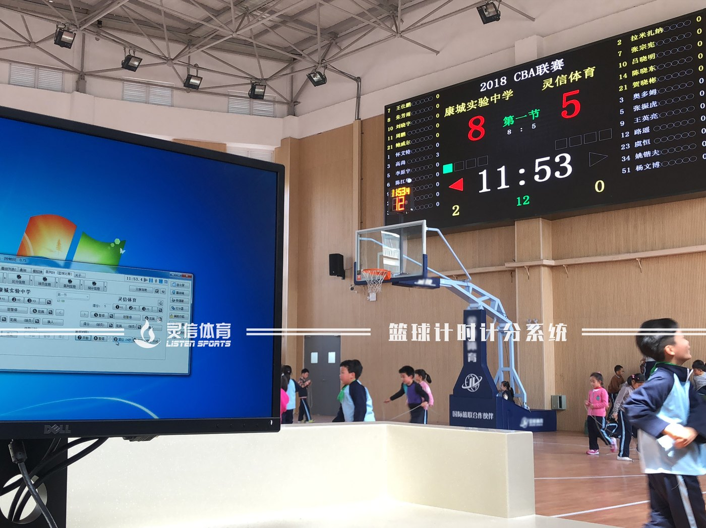
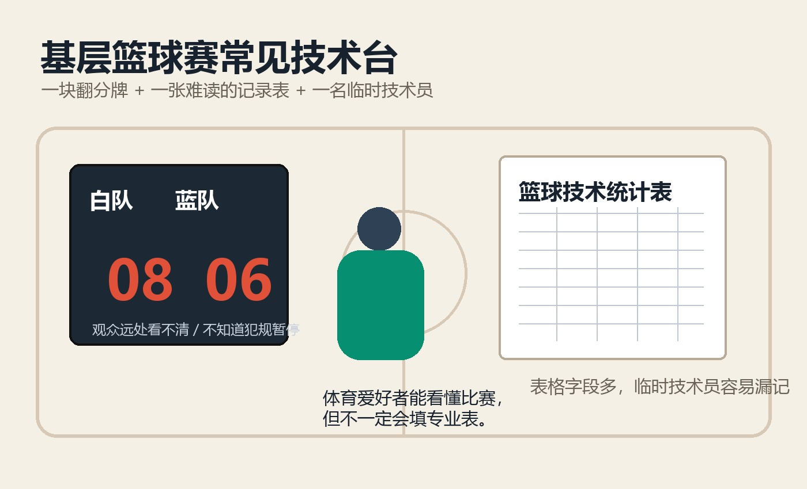
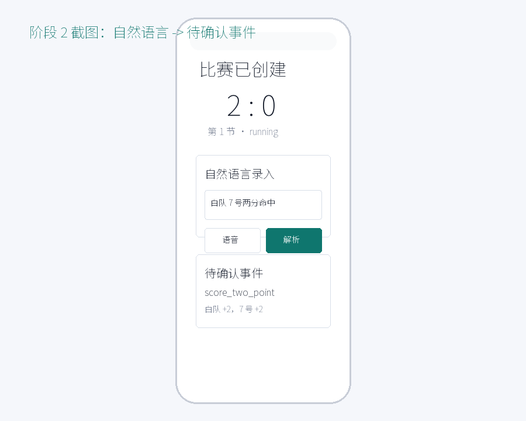
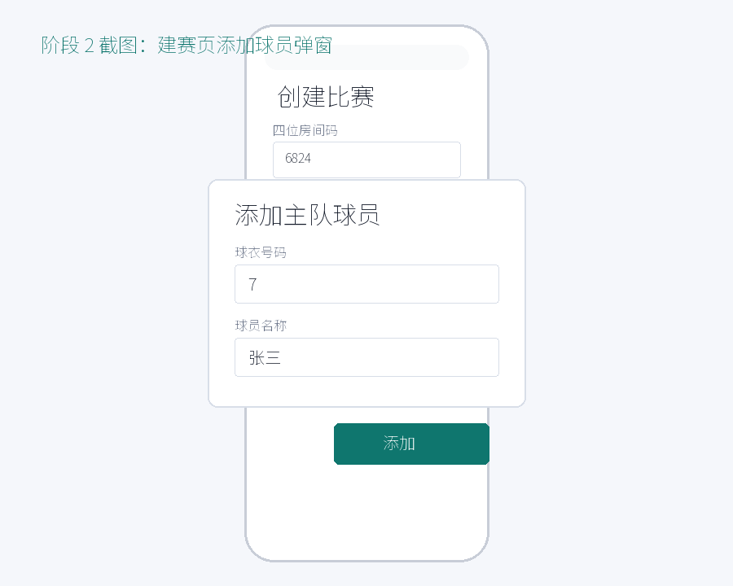
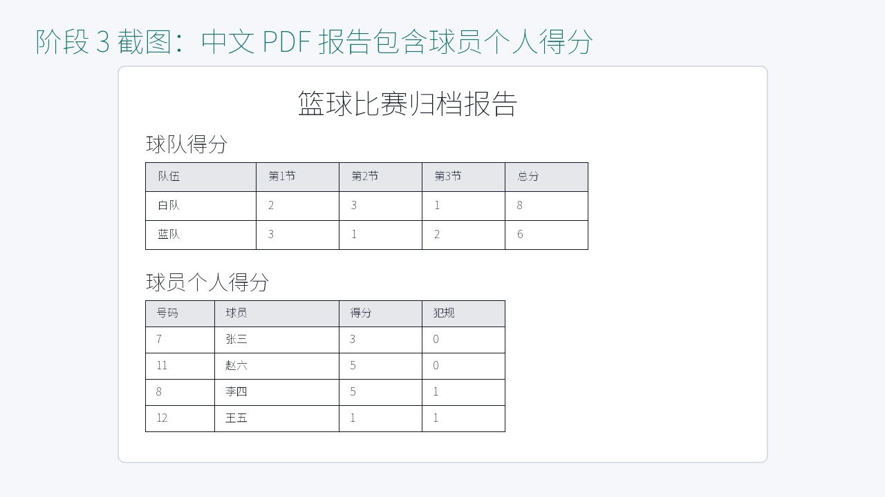
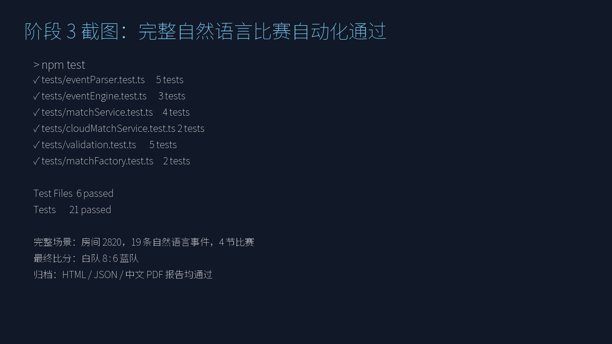

08 : 06
i坤队 / solo / hackathon
篮球技术台自动化
把校园篮球赛从纸笔技术台，带到自然语言驱动的小程序闭环。
1人完成计分、计时、提醒、归档
172s演示视频已满足 3 分钟以内

真实痛点 01
专业计分设施贵且复杂
大型屏幕、控制台和专业记录系统更适合正式赛事。对于校园内篮球爱好者比赛，硬件和操作成本都过高。
- 依赖场馆、设备和专人维护
- 信息面板复杂，临时技术员难上手
- 基层比赛很难长期复用
真实痛点 02
基层赛事更常见：翻分牌 + 记录表
便捷是第一优先级，但便捷也带来新的问题：观众看分困难，技术台容易漏记，专业统计表看不懂。

观众远处看不清比分；不知道犯规、暂停、节次
技术台临时人员门槛高；表格字段多，容易漏填
现有产品不足
按钮式小程序降低了门槛，但还没有真正“无门槛”
现有小程序能做计分，但得分、犯规等技术指标分开记录，技术员仍需要找按钮、切模块。
仍有操作门槛
临场需要判断：这次事件该点哪个按钮、在哪个模块记录。
规则提醒不足
暂停、计时、最后一分钟、犯规临界提醒常被忽略。
本项目方向
只说清楚场上事件，系统自动转为得分、犯规、暂停和提醒。
本产品定位
面向校园篮球爱好者比赛
让“懂球但不懂技术台”的体育爱好者，也能承担整场比赛记录。
白队 7 号两分命中
→
待确认事件
→
比分 +2
个人得分 +2
事件流入账
个人得分 +2
事件流入账

核心价值 01
原本三人的技术台，缩减到一人
校园比赛常见配置是：两人计分相互校对，一人计时并翻总得分。本产品把“说事件 → 自动转指标 → 自动提醒 → 实时展示”串成一条链。
传统计分员 A计分员 B计时 / 翻分
→
现在一名技术员自然语言记录系统自动校对提醒
核心价值 02
不只是计分，还能防漏判
事件流回放会同步计算犯规、暂停、节次和时间状态，在临界点提醒技术员。
个人犯规累计到 5 犯临界时提醒
球队犯规本节第 5 犯提醒
暂停额度记录使用次数，避免口头遗漏
计时提醒最后一分钟、节次结束可追踪
完整产品闭环
建赛、观众、录入
签字归档
01创建比赛房间码 + 球员
02观众加入只读比分页
03自然语言解析 + 确认
04比赛结束finished 状态
05签字归档HTML / JSON / PDF


赛后情绪价值
球队比分之外
留下个人得分
传统计分表有阅读门槛，不适合赛后分享。本产品导出中文报告，包含球队得分和球员个人得分，给参赛者可传播、可复盘的结果。
当前完成度
首版已跑通完整自然语言比赛
测试场景覆盖 4 节、19 条文本事件、得分、犯规、暂停、时间更正、比赛结束、观众页、双方签字、归档导出和 PDF 打开。

21测试用例通过
8:6完整比赛最终比分
3HTML / JSON / PDF 导出
下一步
从校园比赛的首版闭环，扩展到更多技术指标与排名系统
首版聚焦“低门槛技术台”。后续可扩展篮板、助攻、抢断、球员榜单、赛事排名和长期数据档案。
GitHub
INTERPUT/basketball-scorekeeper-miniapp
Team
i坤队 / solo